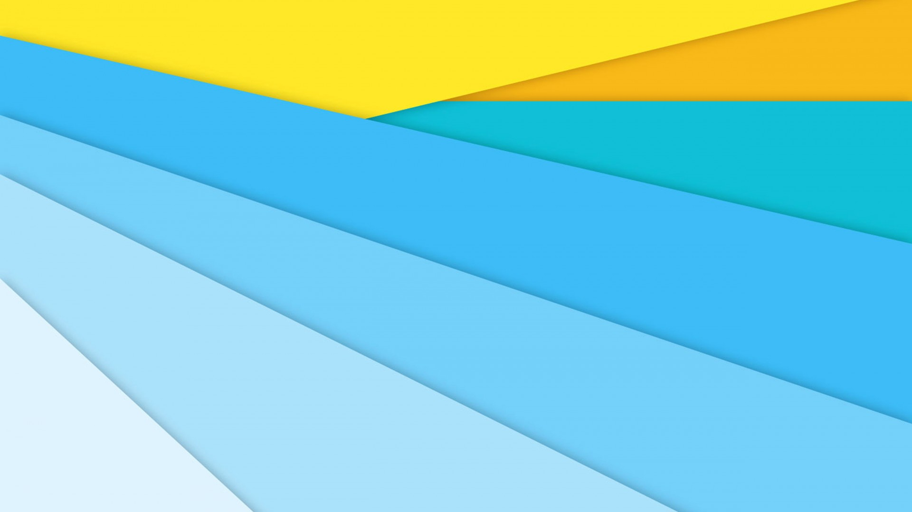

<div [class.appRoot]="true" [class.isMobile]="mobileQuery.matches" [ngClass]="themeService.config.current">

  <mat-sidenav-container #sideNavContainer id="sidenavContainer" class="sNavContainer">
    <mat-sidenav #sidenav id="sidenav" [mode]="mobileQuery.matches ? 'over' : 'side'" [fixedInViewport]="mobileQuery.matches" (closedStart)="closeSideNav()">
      <mat-nav-list>

        <header class="cover">
          <div class="action">
            <a mat-icon-button color="primary" (click)="closeSideNav()"><i class="material-icons">arrow_back</i></a>
            
          </div>
          
        </header>

        <main>
        <ng-template ngFor let-nav [ngForOf]="navList">
          <div *ngIf="nav.exterior; then sideNavExt else sideNavInt"></div>

          <!-- nav link posibilities -->
          <ng-template #sideNavExt>
            <a mat-list-item href="{{ nav.link }}">
              <span [innerHTML]="nav.title[currentLang]"></span>
            </a>

          </ng-template>
          <ng-template #sideNavInt>
            <a mat-list-item routerLink="{{ nav.link }}">
              <span [innerHTML]="nav.title[currentLang]"></span>
            </a>

          </ng-template>
        </ng-template>
        </main>

        <footer class="primary-text">
          <div class="copyright">
            <p>
              <span>© 2017 Valorad the Oneiroseeker</span>
              <span><a href="https://github.com/valorad/wcnexus.com/blob/master/LICENSE" title="MIT License"><i class="iconfont icon-libra"></i></a></span>
            </p>
          </div>
          <div class="flexSpacer"></div>
          <div class="social">
            <p>
              <span><a href="https://weibo.com/wcxaaa" target="_blank"><i class="iconfont icon-weibo"></i></a></span>
              <span><a href="https://www.zhihu.com/people/ying-pan-mao" target="_blank"><i class="iconfont icon-zhihu"></i></a></span>
              <span><a href="https://twitter.com/wcxaaa" target="_blank"><i class="iconfont icon-twitter"></i></a></span>
              <span><a href="https://github.com/valorad" target="_blank"><i class="iconfont icon-github"></i></a></span>
            </p>
          </div>
        </footer>

      </mat-nav-list>
    </mat-sidenav>

    <mat-sidenav-content>
      <!-- this tag has been left dummy but do not delete it. -->
    </mat-sidenav-content>

  </mat-sidenav-container>

  <nav class="app">
    <mat-toolbar color="primary">
      <header>
        <div class="hideLG">
          <a mat-icon-button (click)="openSideNav()" ><i class="material-icons">menu</i></a>
        </div>
        <div>
          <a mat-button routerLink="/index">
            <span class="brand"><i class="icomoon icon-wcnexus"></i></span>
            <span class="showLG title">wcnexus</span>
          </a>  
        </div>
      </header>
      <main class="navTopList showLG">
        <ng-template ngFor let-nav [ngForOf]="navList">
          <div *ngIf="nav.exterior; then topNavExt else topNavInt"></div>

          <!-- nav link posibilities -->
          <ng-template #topNavExt>
            <a mat-button href="{{ nav.link }}">
              <span [innerHTML]="nav.title[currentLang]"></span>
            </a>
          </ng-template>
          <ng-template #topNavInt>
            <a mat-button routerLink="{{ nav.link }}">
              <span [innerHTML]="nav.title[currentLang]"></span>
            </a>
          </ng-template>

        </ng-template>
      </main>
      <div class="flexSpacer"></div>
      <footer>
        <a mat-button [matMenuTriggerFor]="langMenu">
          <span class="brand lang"><i class="material-icons">language</i></span>
          <span class="title showLG">{{ 'app.changeLanguage' | translate }}</span>
        </a>
        <a mat-button href="https://github.com/valorad/wcnexus.com" target="_blank">
          <span class="brand">
            <i class="iconfont icon-github"></i>
          </span>
          <span class="title showLG">{{ 'github' | translate }}</span>
        </a>
      </footer>

      <!-- mat menus -->
      <mat-menu #langMenu="matMenu">
        <button mat-menu-item *ngFor="let lang of languageList" (click)="changeLang(lang.name)">{{ lang.descr }}</button>
      </mat-menu>

    </mat-toolbar>
  </nav>

  <!-- Router * Router * Router * Router * Router * Router -->
  <main class="router">
    <router-outlet></router-outlet>        
  </main>
  <!-- Router * Router * Router * Router * Router * Router -->
  <footer class="app primary flex-reverse-ltLG">
    <div class="copyright">
      <p>
        <span>© 2017 Valorad the Oneiroseeker</span>
        <span><a href="https://github.com/valorad/wcnexus.com/blob/master/LICENSE" title="MIT License"><i class="iconfont icon-libra"></i></a></span>
      </p>
    </div>
    <div class="flexSpacer"></div>
    <div class="social">
      <p>
        <span><a href="https://weibo.com/wcxaaa" target="_blank"><i class="iconfont icon-weibo"></i></a></span>
        <span><a href="https://www.zhihu.com/people/ying-pan-mao" target="_blank"><i class="iconfont icon-zhihu"></i></a></span>
        <span><a href="https://twitter.com/wcxaaa" target="_blank"><i class="iconfont icon-twitter"></i></a></span>
        <span><a href="https://github.com/valorad" target="_blank"><i class="iconfont icon-github"></i></a></span>
      </p>
    </div>

  </footer>


</div>